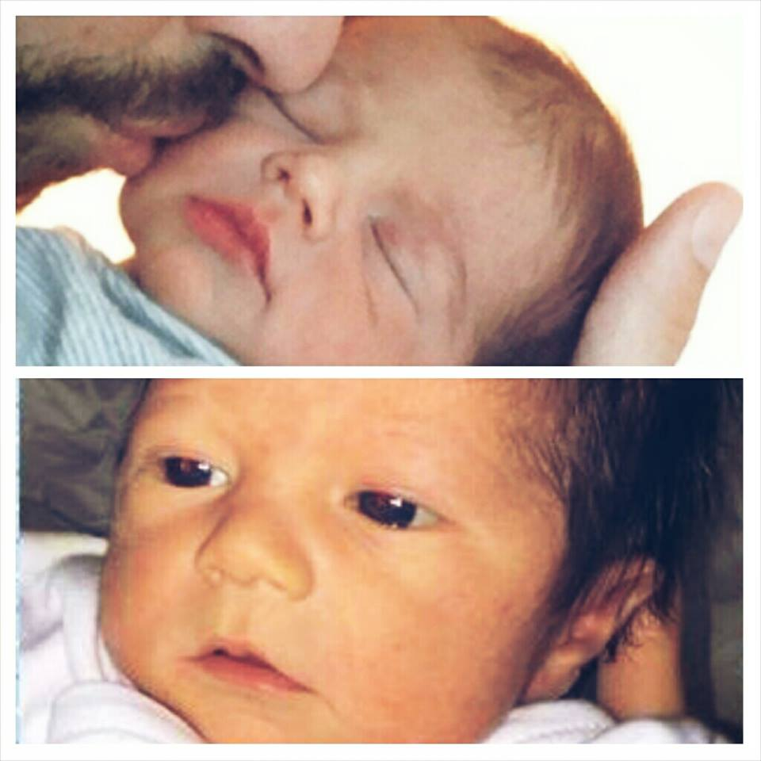
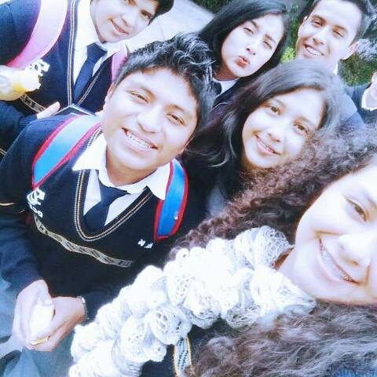
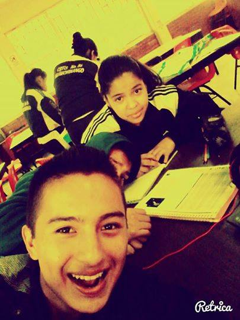
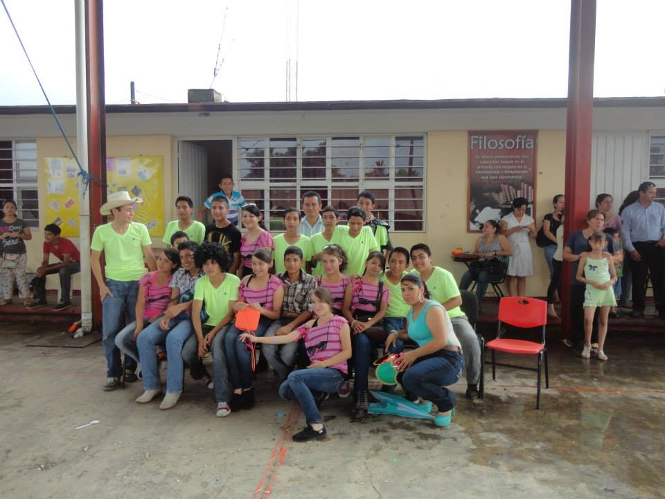
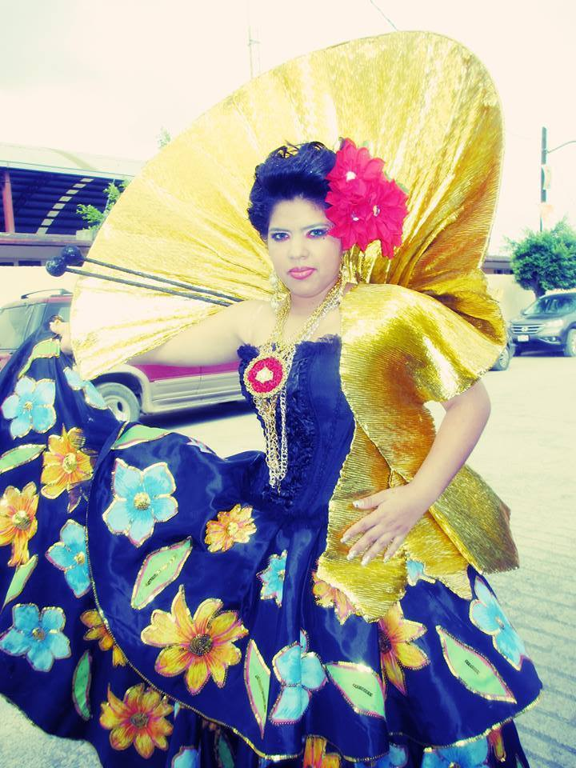
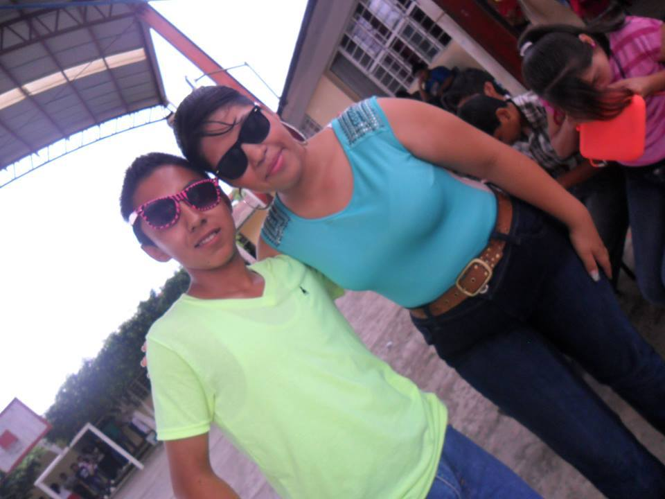
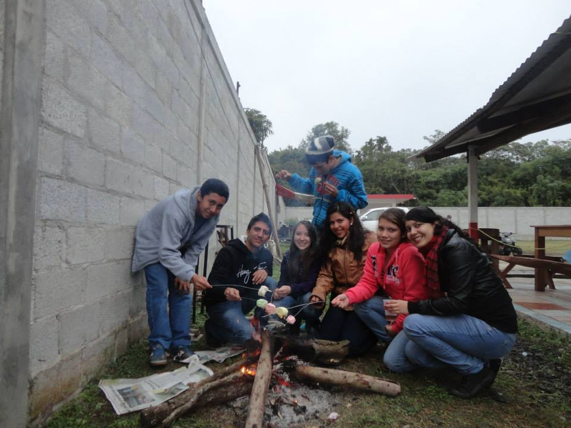
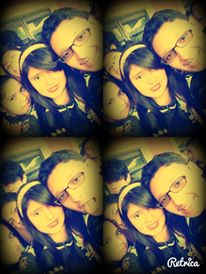

Mi nombre es Anel Peralta García, tengo 16 años de edad. Nací el 19 de Noviembre de 1998 en Poza Rica de Hidalgo, Veracruz. Mi tipo de sangre es B positivo. Mis padres son Eutimio Peralta Hernández y Juana García Vargas. Mis hermanos son Zaida Peralta García y Valentín Eutimio Peralta García.

Mis estudios comenzaron desde el jardin de niños Francisco Gabilondo Soler "Cri-cri"el cual estudie en la ciudad de Villa Lázaro Cárdenas, Puebla Despues de salir de ahi estudie en la Primaria "Expropoiación Pretolera "en Villa Lázaro Cárdenas,Puebla,tuve muchas amistades ahi que aun conservo algunas ,llevaba buenas calificaciones, y estaba en el equipo de básquetbol .Despues de terminar la primaria segui con mis estudios en la Telesecundaria "Damián Carmona",en ese pantel tuve muchas dificulades que provoco que mis calificaciones bajaran,pero un asi eso no fue impedimento para que yo siguiera estudiando asi que termine.Actualmente estoy estudiando en el C.B.T.i.s. 86 y me encuentro en cuarto semestre en la especialidad de Programacion.

Mis logros han sido:Logre terminar la primaria,estar en el equipo de basquetbol y recibir un reconocimiento por rpresentar a la escuela en deportivos ,salir de la secundaria, ser la chica simpatia,recibir reconocimientos por estar en múscia latinoamericana por estar en equipo de basquetbol y otros mas reconociminetos que he recibo durante este periodo de vida.
